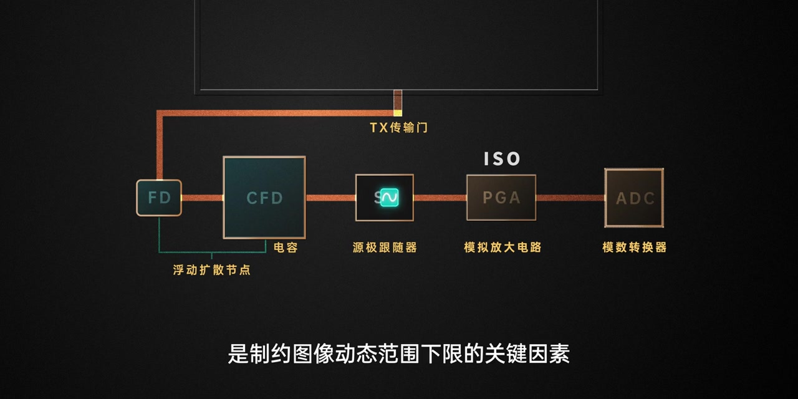
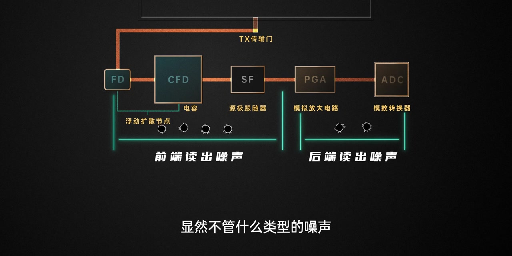

开场：烦人的噪点，其实叫噪声
视频用两根蜡烛的夜景开场：画面沙沙作响，颗粒感很重。字幕直接点题——你肯定见过这些烦人的噪点；在电子信号处理里，它们被称作噪声。
画面字幕：「你肯定见过画面中这些烦人的噪点」
说明：Whisper 把「烦人的噪点」识成「凡人的造点」，「像点」识成「向点」，「过渡不均」识成「过度不均」。下文叙述以画面字幕与动画为准；末尾仍完整保留全部 Whisper 分段。

旁白接着解释：噪声出现，是因为信号在采集、传输、转换和量化过程中总会有误差，无法完全规避。这些误差让画面里的一些像点不能精确显示原本的亮度与色度，像素之间出现波动、过渡不均；又因为噪声随机分布，在动态画面里更容易被察觉。

噪声类型很多，但日常最在意的只有两类
动画甩出一整张「噪声地图」：读出噪声、暗电流、热噪声、散粒噪声、固定模式噪声、非均匀响应噪声、量化噪声等。旁白举例说，传感器内硅基材料因热激发形成自由电子，会汇聚成暗电流；制造公差导致像素光敏差异，则引发非均匀响应噪声一类问题。
画面字幕：「例如传感器内硅基材料因热激发」
Whisper 把「硅基材料因热激发」识成「内规及材料因热机发」，「非均匀响应噪声」识成「非均影响营造声」。

不过视频很快安抚观众：就算你不了解这些名字也没关系——大部分噪声在日常拍摄里影响很小，真正存在感强的，是接下来要展开的两类。
散粒噪声：光子本身就不整齐
当定量的光进入传感器，理想情况是每个像素接到相同数量的光子。但现实中光子传播并非规整有序，而是离散、随机波动的，所以相同曝光时间内各像素收到的光子数并不完全一致。由此引发的误差，就是散粒噪声（画面大字也写作「散射噪声」，英文对应 Photon Shot Noise）。

暗光环境光子很少，哪怕微小波动也会在信号里占很高比例，于是信噪比低、画质下降。动画用信号均值 36、标准差 6 的五块光子网格，把「计数偏差」画得很直观，旁边还塞进那对蜡烛夜景作对照。
画面字幕：「暗光环境由于光子数量很少」

反过来，随着光子数量增加，散粒噪声的绝对值也会上升，但有效信号涨得更快，信噪比显著提升，画面更干净。
向右曝光：在不过曝的前提下加进光量
视频给出操作性结论：提升信噪比的最优点，就是在不过曝的前提下增加进光量——这也是为什么要向右曝光（ETTR）的根本原因。对比画面把信号均值推到三万多、标准差相对变小，右侧还挂出直方图示意。
画面字幕：「就是在不过曝的前提下增加进光量」
Whisper 把「信噪比」识成「新噪比」，「不过曝」识成「不过爆」。

读出链路噪声：前端随 ISO 放大，后端相对固定
信号在读出链路各环节也会引入噪声。动画沿 TX 传输门画出路径：浮动扩散节点 FD / 电容 → 源极跟随器 SF → ISO/PGA 模拟放大 → ADC。旁白强调：像浮动扩散节点和源极跟随器这类噪声相对固定，与信号强弱、曝光时长无关，是制约图像动态范围下限的关键因素。
画面字幕：「是制约图像动态范围下限的关键因素」
Whisper 把「读出」识成「读书」，「源极跟随器」识成「原机跟随器」，「下限」识成「下线」；把「PGA」识成「TG」。

提高 ISO 时，PGA 会对电压信号做模拟放大，于是这一段电路的读出噪声也被同步放大——叫前端读出噪声。而 PGA 与 ADC 本身还会引入另一部分噪声，它不随 ISO 提高而改变，叫后端读出噪声。
收束：信噪比越高，画面越干净
不管什么噪声，大家想要的都只是纯净的信号——也就是光。把信号与噪声放在一起，就有了信噪比：比值越高，有效信号越强，画面纯净、观感舒适；反之画质粗糙、观感下降。
画面字幕：「把它们放在一起」
